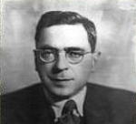

Nevzat Tandoðan (1894-1946)

Yakýn tarihimizin ünlü simalarýndan birisidir. Tek parti iktidarýnýn ve bürokrasisinin sembol isimlerindendir. Çok uzun süre Ankara Valiliði ve Belediye Baþkanlýðý yapmýþtýr. Ýntihar ediþine kadar Ankara Valiliðini sürdürmüþtür. Ünlü, “Bu memlekete komünizm gerekiyorsa ve komünizm yararlý bir þeyse onu da biz getiririz, size ne oluyor?” sözlerinin sahibidir. Ýdareciliði boyunca despotluðu, hukuk tanýmazlýðý ile ün yapmýþtýr. Ýntihar olayý hâlâ aydýnlatýlamamýþtýr. Makamýna getirttiði Bediüzzaman’ýn kýyafetine müdahale ederek, zorla baþýna þapka giydirmeye çalýþmýþtýr.Tandoðan, 1894 yýlýnda Ýstanbul’da doðdu. Burada baþladýðý eðitimini 1914 yýlýnda Ýstanbul Üniversitesi Hukuk Fakültesi’nde tamamladý. Fakülteden mezun olduðu yýl çalýþmaya baþladý. Ýlk olarak 1914 yýlýnda öðretmenlik yapmaya baþladý. Bu görevi 1918 yýlýna kadar sürdürdü. Ýstanbul Polis Müdürlüðüne atandýktan sonra öðretmenlik görevinden ayrýldý.
Tandoðan, 1918 yýlýnda Ýstanbul Polis Müdürlüðü 2. Þubede Müdür Yardýmcýsý olarak çalýþmaya baþladý. Daha sonra 1. Þube .müdürlüðünde de bulundu. Ýstanbul’daki görevinden sonra 1927 yýlýnda Malatya Valiliðine atandý. Buradaki valiliði sýrasýnda Konya milletvekili olarak gösterilip seçildiyse de valilikten ayrýlmak istemediðinden milletvekilliðinden istifa ederek valiliðine devam etti.
Tandoðan’ýn hayatýndaki belki de en büyük geliþme, 1929 yýlýnda Ankara’ya vali olarak atanmasýyla baþladý. Çok uzun süre bu görevde kaldý. Vali olduktan sonra Ankara Belediye Baþkanlýðýný da birlikte yürüttü. On sekiz yýl gibi uzun süre devam eden Ankara Valiliði ve Belediye Baþkanlýðý 1946 yýlýndaki ölümüne kadar devam etti.
Tandoðan’ýn Ankara Valiliði; tek parti iktidarý döneminde devlet-vatandaþ iliþkisi, bürokratlarýn devlet gücünü ne þekilde kullandýklarý ve Anadolu insanýna bakýþ açýlarý açýsýndan son derece ilginç bir dönemdir. Vali, tek parti iktidarýnda bürokratlarýn önde gelen isimlerinden biri olarak tarihe geçti.
Ankara Valisi Tandoðan, despot ve hukuk tanýmaz kiþiliði ile þöhret buldu. Onun anlayýþýna göre, yapýlacak bir iþ, atýlacak bir adým ilk önce kendileri tarafýndan icra edilecekti. Onun, “Bu memlekete komünizm gerekiyorsa ve komünizm yararlý bir þeyse onu da biz getiririz, size ne oluyor?” sözü dönemin karakteristiðini ortaya koyan ifadeler olarak siyasi tarihimize geçmiþtir.
Vali Tandoðan Anadolu insanýna bakýþýný ise, 3 Mayýs 1944 yýlýnda tutuklanýp huzuruna çýkarýlan Osman Yüksel Serdengeçti’ye karþý sarfettiði sözleriyle ortaya koydu. Vali, tutukluyu süzdükten sonra; “Ulan öküz Anadolulu! Sizin milliyetçilikle, komünizm ile ne iþiniz var? Milliyetçilik lâzýmsa bunu biz yaparýz. Komünizm gerekirse onu da biz getiririz. Sizin iki vazifeniz var: Birincisi, çiftçilik yapýp mahsul yetiþtirmek. Ýkincisi, askere çaðýrdýðýmýzda askere gelmek.” dedi (Doç. Dr. Özcan Yeniçeri, Yönetim ve Bürokrasinin Yozlaþmadaki Rolü-II, http://www.ktuvakfi.org.tr/gorusler2.htm). Bu yaklaþým, kendini devlet sayan, bütün yetkinin sahibi olarak kendilerini gören bürokrat anlayýþýn önemli bir göstergesi olarak tarihe geçti.
Ankara’da basýn üzerinde yaþatýlan büyük baskýlardan dolayý gazeteciler de büyük bir sýkýntý yaþamaktaydýlar. Ankara’dan gazetelerine gönderdikleri haberler, þayet iktidarýn aleyhindeyse, baþlarýna büyük iþler açmakta ve valinin sert tutumuyla karþýlaþmaktaydýlar. Aralarýnda Hürriyet Gazetesi’nin de bulunduðu muhtelif gazetelerde çalýþan ve anýlarýný 1977 yýlýnda yayýnladýðý “Ýþte Ankara” adlý eserinde kaleme alan Emin Karakuþ, bu dönemde yaþanmýþ hadiseleri bir gazeteci gözüyle ortaya koydu. Emin Karakuþ, hatýralarýnda Ankara’dan gönderdikleri haberlerden dolayý çektikleri sýkýntýlarý dile getirdi. 1945 yýlýnda Mecliste, çiftçiyi topraklandýrma kanun tasarýsý üzerinde yapýlan ve CHP içinde cereyan eden tartýþmalarý bir mektupla Zekeriya Sertel’e yazmasý ve bunun öðrenilmesinden sonra Tandoðan’ýn hýþmýna uðradý. Vali, Karakuþ’u makamýna çaðýrdýktan sonra, tabanca gösterip, haberin kaynaðýný öðrenmek maksadýyla tehditte bulundu. Daha sonra peþine taktýðý polislerle büyük sýkýntýlar yaþamasýna sebep oldu.
Tandoðan’ýn hukuk tanýmazlýðýna iki önemli olay yine Emin Karakuþ tarafýndan nakledilmektedir. Vali, hakkýnda þikayette bulunan eczacýnýn Ankara’yý terk etmesini saðlamýþtýr. Yine bir baþka olayda, belediyeyi mahkemeye verip Danýþtay’a þikayette bulunan ve davayý kazanan bir müteahhit, buna raðmen bir þey elde edememiþ; Valilik Danýþtay’ýn kararýný uygulamadýðý gibi, Tandoðan karar yazýsýný müteahhidin elinden alýp parçaladýktan sonra, “Burada benim sözüm geçer” demek suretiyle hukuku çiðnemiþtir.
Tandoðan’ýn baský ve takibine uðrayanlardan birisi de Bediüzzaman Said Nursi’dir. Bazý hatýralarda, 13 Ekim 1943 tarihinde Bediüzzaman’ýn Ankara’ya getiriliþi, vilayete çýkarýlmasý ve burada cereyan eden hadiselere yer verilmektedir. Tandoðan’ýn, Bediüzzaman’a odasýnda zorla þapka giydirmeye kalkýþtýðý, baþýndakini çýkarýp þapkayý giymesini isteyen valiye, Bediüzzaman’ýn boynunu göstererek; “Bu külah ancak bu kelle ile beraber çýkar” (Abdülkadir Badýllý, Bediüzzaman Said Nursi Mufassal Tarihçe-i Hayatý, 2. C. Ýstanbul 1998, s. 1210-1217) þeklinde mukabelede bulunduðu ifade edilmektedir. Bu hadise üzerine, hemen hemen hiç beddua etmeyen Bediüzzaman’ýn Tandoðan’a “Baþýndan bulasýn!” þeklinde beddua ettiði belirtilmektedir. Risale-i Nur’da, Ankara’da Bediüzzaman’a þapka giydirmek için kötü muamelede bulunan Tandoðan’ýn intihar etmesi, kendi cezasýnýn kendi eliyle verildiði þeklinde deðerlendirilmektedir. (Emirdað Lahikasý, s. 155)
Tandoðan’ýn, 9 Temmuz 1946 tarihindeki intihar olayý üzerindeki sýr perdesi ise hâlâ varlýðýný korumaya devam etmektedir. Bir iddiaya göre, Dönemin Genelkurmay Baþkaný Kazým Orbay’ýn oðlu Haþmet Orbay’ýn adýnýn karýþtýðý Dr. Neþet Naci Arcan cinayeti ile ilgili mahkemede tanýk olarak dinlenen ve sýradan bir vatandaþ gibi muamele gören Tandoðan, kendisine yapýlan bu davranýþý hazmedemeyerek intihar etmiþtir. (Büyük Larousse, 21. C. Milliyet Y., Ýstanbul 1986, s. 11201)